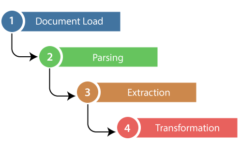
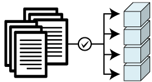
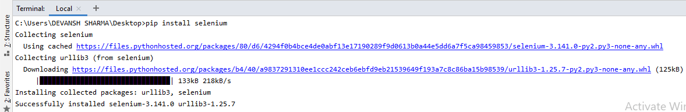
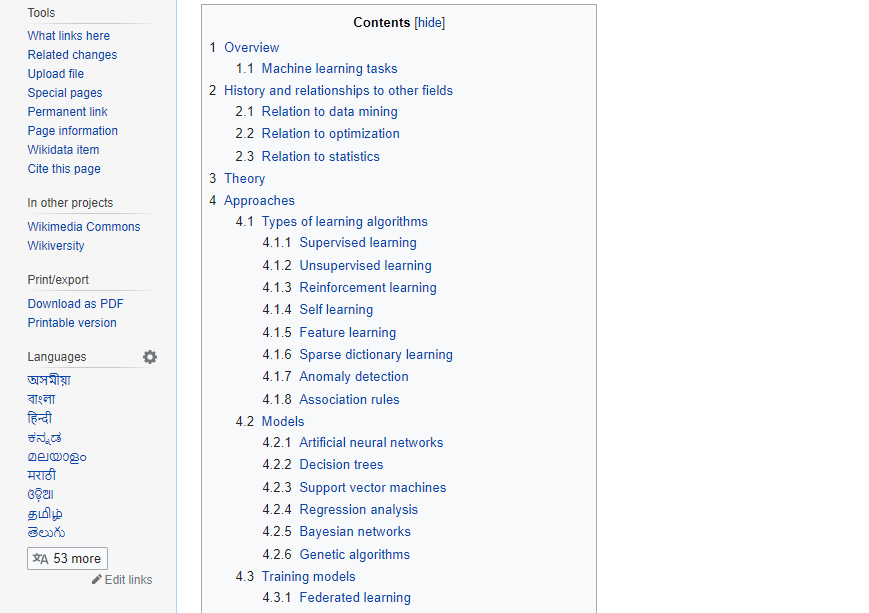
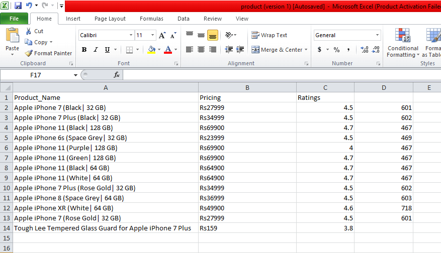

Web Scraping Using PythonWhat is Web Scraping?Web Scraping is a technique to extract a large amount of data from several websites. The term "scraping" refers to obtaining the information from another source (webpages) and saving it into a local file. For example: Suppose you are working on a project called "Phone comparing website," where you require the price of mobile phones, ratings, and model names to make comparisons between the different mobile phones. If you collect these details by checking various sites, it will take much time. In that case, web scrapping plays an important role where by writing a few lines of code you can get the desired results. 
Web Scrapping extracts the data from websites in the unstructured format. It helps to collect these unstructured data and convert it in a structured form. Startups prefer web scrapping because it is a cheap and effective way to get a large amount of data without any partnership with the data selling company. Is Web Scrapping legal?Here the question arises whether the web scrapping is legal or not. The answer is that some sites allow it when used legally. Web scraping is just a tool you can use it in the right way or wrong way. Web scrapping is illegal if someone tries to scrap the nonpublic data. Nonpublic data is not reachable to everyone; if you try to extract such data then it is a violation of the legal term. There are several tools available to scrap data from websites, such as:
Why Web Scrapping?As we have discussed above, web scrapping is used to extract the data from websites. But we should know how to use that raw data. That raw data can be used in various fields. Let's have a look at the usage of web scrapping:
It is widely used to collect data from several online shopping sites and compare the prices of products and make profitable pricing decisions. Price monitoring using web scrapped data gives the ability to the companies to know the market condition and facilitate dynamic pricing. It ensures the companies they always outrank others.
eb Scrapping is perfectly appropriate for market trend analysis. It is gaining insights into a particular market. The large organization requires a great deal of data, and web scrapping provides the data with a guaranteed level of reliability and accuracy.
Many companies use personals e-mail data for email marketing. They can target the specific audience for their marketing.
A single news cycle can create an outstanding effect or a genuine threat to your business. If your company depends on the news analysis of an organization, it frequently appears in the news. So web scraping provides the ultimate solution to monitoring and parsing the most critical stories. News articles and social media platform can directly influence the stock market.
Web Scrapping plays an essential role in extracting data from social media websites such as Twitter, Facebook, and Instagram, to find the trending topics.
The large set of data such as general information, statistics, and temperature is scrapped from websites, which is analyzed and used to carry out surveys or research and development. Why use Python for Web Scrapping?There are other popular programming languages, but why we choose the Python over other programming languages for web scraping? Below we are describing a list of Python's features that make the most useful programming language for web scrapping.
In Python, we don't need to define data types for variables; we can directly use the variable wherever it requires. It saves time and makes a task faster. Python defines its classes to identify the data type of variable.
Python comes with an extensive range of libraries such as NumPy, Matplotlib, Pandas, Scipy, etc., that provide flexibility to work with various purposes. It is suited for almost every emerging field and also for web scrapping for extracting data and do manipulation.
The purpose of the web scrapping is to save time. But what if you spend more time in writing the code? That's why we use Python, as it can perform a task in a few lines of code.
Python is open-source, which means it is freely available for everyone. It has one of the biggest communities across the world where you can seek help if you get stuck anywhere in Python code. The basics of web scrapingThe web scrapping consists of two parts: a web crawler and a web scraper. In simple words, the web crawler is a horse, and the scrapper is the chariot. The crawler leads the scrapper and extracts the requested data. Let's understand about these two components of web scrapping:
A web crawler is generally called a "spider." It is an artificial intelligence technology that browses the internet to index and searches for the content by given links. It searches for the relevant information asked by the programmer. A web scraper is a dedicated tool that is designed to extract the data from several websites quickly and effectively. Web scrappers vary widely in design and complexity, depending on the projects. How does Web Scrapping work?These are the following steps to perform web scraping. Let's understand the working of web scraping. Step -1: Find the URL that you want to scrape First, you should understand the requirement of data according to your project. A webpage or website contains a large amount of information. That's why scrap only relevant information. In simple words, the developer should be familiar with the data requirement. Step - 2: Inspecting the Page The data is extracted in raw HTML format, which must be carefully parsed and reduce the noise from the raw data. In some cases, data can be simple as name and address or as complex as high dimensional weather and stock market data. Step - 3: Write the code Write a code to extract the information, provide relevant information, and run the code. Step - 4: Store the data in the file Store that information in required csv, xml, JSON file format. Getting Started with Web ScrappingPython has a vast collection of libraries and also provides a very useful library for web scrapping. Let's understand the required library for Python. Library used for web scrapping
Note - It is good to use the PyCharm IDE.
Pandas library is used for data manipulation and analysis. It is used to extract the data and store it in the desired format.
Let's understand the BeautifulSoup library in detail. Installation of BeautifulSoup You can install BeautifulSoup by typing the following command: Installing a parser BeautifulSoup supports HTML parser and several third-party Python parsers. You can install any of them according to your dependency. The list of BeautifulSoup's parsers is the following:
We recommend you to install html5lib parser because it is much suitable for the newer version of Python, or you can install lxml parser. Type the following command in your terminal: 
BeautifulSoup is used to transform a complex HTML document into a complex tree of Python objects. But there are a few essential types object which are mostly used:
A Tag object corresponds to an XML or HTML original document. Output: <class "bs4.element.Tag"> Tag contains lot of attributes and methods, but most important features of a tag are name and attribute.
Every tag has a name, accessible as .name:
A tag may have any number of attributes. The tag <b id = "boldest"> has an attribute "id" whose value is "boldest". We can access a tag's attributes by treating the tag as dictionary. We can add, remove, and modify a tag's attributes. It can be done by using tag as dictionary.
In HTML5, there are some attributes that can have multiple values. The class (consists more than one css) is the most common multivalued attributes. Other attributes are rel, rev, accept-charset, headers, and accesskey.
A string in BeautifulSoup refers text within a tag. BeautifulSoup uses the NavigableString class to contain these bits of text. A string is immutable means it can't be edited. But it can be replaced with another string using replace_with(). In some cases, if you want to use a NavigableString outside the BeautifulSoup, the unicode() helps it to turn into normal Python Unicode string.
The BeautifulSoup object represents the complete parsed document as a whole. In many cases, we can use it as a Tag object. It means it supports most of the methods described in navigating the tree and searching the tree. Output: ?xml version="1.0" encoding="utf-8"?> # <document><content/><footer>Here's the footer</footer></document> Web Scrapping Example:Let's take an example to understand the scrapping practically by extracting the data from the webpage and inspecting the whole page. First, open your favorite page on Wikipedia and inspect the whole page, and before extracting data from the webpage, you should ensure your requirement. Consider the following code: Output: The object type <class 'requests.models.Response'> Convert the object into: <class 'bs4.BeautifulSoup'> In the following lines of code, we are extracting all headings of a webpage by class name. Here front-end knowledge plays an essential role in inspecting the webpage. Output: Overview,Machine learning tasks,History and relationships to other fields,Relation to data mining, Relation to optimization,Relation to statistics, Theory,Approaches,Types of learning algorithms, Supervised learning,Unsupervised learning,Reinforcement learning,Self-learning,Feature learning, Sparse dictionary learning,Anomaly detection,Association rules,Models,Artificial neural networks, Decision trees,Support vector machines,Regression analysis,Bayesian networks,Genetic algorithms, Training models,Federated learning,Applications,Limitations,Bias,Model assessments,Ethics,Software, Free and open-source software,Proprietary software with free and open-source editions,Proprietary software,Journals,Conferences,See also,References,Further reading,External links, In the above code, we imported the bs4 and requested the library. In the third line, we created a res object to send a request to the webpage. As you can observe that we have extracted all heading from the webpage. Webpage of Wikipedia Learning Let's understand another example; we will make a GET request to the URL and create a parse Tree object (soup) with the use of BeautifulSoup and Python built-in "html5lib" parser. Here we will scrap the webpage of given link (https://www.javatpoint.com/). Consider the following code: The above code will display the all html code of javatpoint homepage. Using the BeautifulSoup object, i.e. soup, we can collect the required data table. Let's print some interesting information using the soup object:
Output: It will give an output as follow: <title>Tutorials List - Javatpoint</title>
Output: It will give an output as follow: Tutorials List - Javatpoint
Output: It will print all links along with its attributes. Here we display a few of them: href is: https://www.facebook.com/javatpoint Inner Text is: The title is: None href is: https://twitter.com/pagejavatpoint Inner Text is: The title is: None href is: https://www.youtube.com/channel/UCUnYvQVCrJoFWZhKK3O2xLg Inner Text is: The title is: None href is: https://javatpoint.blogspot.com Inner Text is: Learn Java Title is: None href is: https://www.javatpoint.com/java-tutorial Inner Text is: Learn Data Structures Title is: None href is: https://www.javatpoint.com/data-structure-tutorial Inner Text is: Learn C Programming Title is: None href is: https://www.javatpoint.com/c-programming-language-tutorial Inner Text is: Learn C++ Tutorial Demo: Scraping Data from Flipkart WebsiteIn this example, we will scrap the mobile phone prices, ratings, and model name from Flipkart, which is one of the popular e-commerce websites. Following are the prerequisites to accomplish this task: Prerequisites:
Step - 1: Find the desired URL to scrap The initial step is to find the URL that you want to scrap. Here we are extracting mobile phone details from the flipkart. The URL of this page is https://www.flipkart.com/search?q=iphones&otracker=search&otracker1=search&marketplace=FLIPKART&as-show=on&as=off. Step -2: Inspecting the page It is necessary to inspect the page carefully because the data is usually contained within the tags. So we need to inspect to select the desired tag. To inspect the page, right-click on the element and click "inspect". Step - 3: Find the data for extracting Extract the Price, Name, and Rating, which are contained in the "div" tag, respectively. Step - 4: Write the Code Output: We scrapped the details of the iPhone and saved those details in the CSV file as you can see in the output. In the above code, we put a comment on the few lines of code for testing purpose. You can remove those comments and observe the output. In this tutorial, we have discussed all basic concepts of web scrapping and described the sample scrapping from the leading online ecommerce site flipkart. |